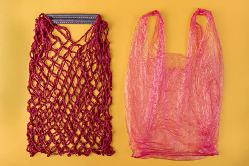

👋 Introduction & Passion
Hi, I'm Ethan Chuwa, and I've been on a journey toward eco-friendly living for the past few years. What started as curiosity about cutting down plastic has turned into a full-on lifestyle shift—and now, a passion I carry into everyday decisions. I believe that sustainability isn't about being perfect—it's about being mindful, intentional, and open to change. I care deeply about our planet and believe that with a little creativity, anyone can build a greener, more meaningful way of life. Whether it's through reusing materials, reducing waste, or simply talking about environmental choices, I'm committed to living lighter and helping others do the same.
♻️ My Experiences with Waste Reduction

My journey into low-waste living began when I started noticing just how much single-use waste I was generating—plastic bags, takeaway containers, packaging from online orders. I decided to start small by making just one change at a time: bringing my own bags to the store, saying no to straws, composting kitchen scraps. Over time, these tiny efforts snowballed into a full lifestyle shift. There were definitely challenges. Finding bulk shops wasn't always easy. Some habits took time to form. But each step, even the setbacks, taught me something new. I've joined local community groups, learned to repair instead of replace, and even helped friends begin their own sustainability journeys. What I've learned is that waste reduction is as much about building connection as it is about personal habits—it's about being part of a bigger change.
🌿 My Favorite Green Hacks
1. DIY Cleaning Products
One of my most satisfying eco-discoveries has been making my own cleaning supplies. Store-bought cleaners often come in single-use plastic bottles and contain harsh chemicals that aren't always necessary. I now make an all-purpose cleaner by soaking citrus peels in white vinegar for two weeks, then straining and mixing it with water and a few drops of essential oil. It's safe, effective, and smells amazing. Plus, it gives a second life to citrus peels that would otherwise go to waste.
2. Use Cloth Instead of Paper
Switching from disposable paper products to reusable cloth was a surprisingly simple and impactful change. I now use cloth napkins, handkerchiefs, and reusable paper towels made from old T-shirts or linen. They're durable, easy to wash, and save money in the long run. I even carry a small cloth with me when I'm out, which comes in handy more often than you'd think—whether for spills, wiping hands, or wrapping snacks.
3. Buy in Bulk (Package-Free)
Shopping from bulk bins has completely changed how I stock my pantry. I bring my own jars and cloth bags to the store and fill them with everything from pasta and rice to nuts and spices. Not only do I avoid unnecessary packaging, but I can also buy exactly how much I need, which helps reduce food waste too. It's also a great way to support local refill shops and farmers' markets that prioritize sustainability.